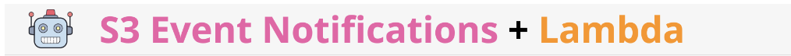
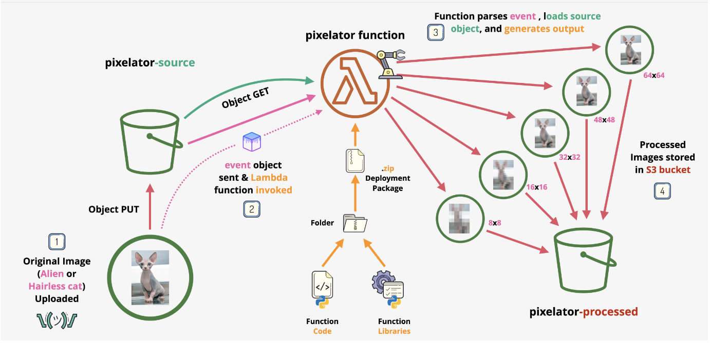

Lambda and S3 Events

Creation of an event-driven image processing pipeline using two S3 buckets and a lambda function.
🚀 Project Overview
In this demo lesson you're going to create a simple event-driven image processing pipeline. The pipeline uses two S3 buckets, a source bucket and a processed bucket. When images are added to the source bucket a lambda function is triggered based on the PUT. When invoked the lambda function receives the event and extracts the bucket and object information. Once those details are known, the lambda function, using the PIL module pixelates the image with 5 different variations (8x8, 16x16, 32x32, 48x48 and 64x64) and uploads them to the processed bucket.
🔧 Problem Statement
The existing manual image pixelation process faces challenges of scalability, operational inefficiency, and inconsistency, necessitating the development of an automated solution. This project seeks to address these issues by creating an event-driven image processing pipeline utilizing AWS services. By leveraging S3 buckets for input and output, Lambda functions for processing triggered events, and the Python Imaging Library (PIL) for pixelation, the pipeline aims to automate the pixelation of images with various resolutions upon their addition to the source bucket. This approach will enhance scalability, reduce operational overhead, ensure consistency, and improve the efficiency of image processing tasks, thereby streamlining the entire process and enabling reliable and timely delivery of pixelated images.
💽 Techonology Stack
● Lambda Function: AWS Lambda to execute the code in the cloud
● Storage: AWS S3 for file storage.
● Python: Python3 runtime (PIL Library)
📌 Architecture Diagram

📋 Table of Contents
- Step-1: Create the S3 Buckets
- Step-2: Create Lambda Role
- Step-3: Create The Lambda Function
- Step-4: Configure The Lambda Function Trigger
- Step-5: Test And Monitor
- Step-6: Leanup
🌟 Project Requirements
-
AWS Account: Access to an AWS account with permissions to create and manage S3 buckets, Lambda functions, and IAM roles.
-
S3 Buckets:
- Source Bucket: A designated bucket to receive incoming images triggering the pipeline.
-
Processed Bucket: Another bucket to store processed images after pixelation.
-
Lambda Function:
- Python runtime environment configured for Lambda.
- Integration with the source S3 bucket to trigger on object upload events.
- Use of the Python Imaging Library (PIL) or similar libraries for image pixelation.
-
Ability to upload pixelated images to the processed bucket.
-
Event Configuration:
-
Setup S3 event notifications to trigger the Lambda function upon image uploads to the source bucket.
-
Permissions and Roles:
-
IAM roles and policies configured to grant necessary permissions for Lambda function to access S3 buckets and perform pixelation tasks.
-
Testing and Validation:
- Testing of the entire pipeline to ensure proper triggering of events, image pixelation, and uploading of processed images.
-
Validation of pixelated images in the processed bucket to ensure accuracy and quality.
-
Documentation:
- Comprehensive documentation covering setup instructions, configuration steps, and troubleshooting guidelines.
- Instructions for maintaining and monitoring the pipeline for ongoing operations.
These requirements form the foundation for developing the event-driven image processing pipeline and ensure its successful implementation, operation, and maintenance within the AWS environment.
✨ step-1-create-the-s3-buckets
Move to the S3 Console https://s3.console.aws.amazon.com/s3/home?region=us-east-1#
We will be creating 2 buckets, both with the same name, but each suffixed with a functional title (see below) , all settings apart from region and bucket name can be left as default.
Click Create Bucket and create a bucket in the format of unique-name-source in the us-east-1 region
Click Create Bucket and create a another bucket in the format of unique-name-processed also in the us-east-1 region
These names will need to be unique, but as an example
Bucket 1 : dontusethisname-source
Bucket 2 : dontusethisname-processed
🌟 step-2-create-the-lambda-role
Move to the IAM Console https://console.aws.amazon.com/iamv2/home?#/home
Click Roles, then Create Role
For Trusted entity type, pick AWS service
For the service to trust pick Lambda then click Next , Next again
For Role name put PixelatorRole then Create the role
Click PixelatorRole
Under Permissions Policy we need to add permissions and it will be an inline policy
Click JSON and delete the contents of the code box entirely.
Load this link in a new tab https://github.com/cloudspaceacademy/aws-lambda-s3-events/blob/main/lab-setup/policy/s3pixelator.json
Copy the entire contents into your clipboard and paste into the previous permissions policy code editor box
Locate the words REPLACEME there should be 4 occurrences, 2 each for the source and processed buckets .. and for each of those one for the bucket and another for the objects in that bucket.
Replace the term REPLACEME with the name you picked for your buckets above, in my example it is dontusethisname
You should end with 4 lines looking like this, only with YOUR bucket names
"Resource":[
"arn:aws:s3:::dontusethisname-processed",
"arn:aws:s3:::dontusethisname-processed/*",
"arn:aws:s3:::dontusethisname-source/*",
"arn:aws:s3:::dontusethisname-source"
]
Locate the two occurrences of YOURACCOUNTID, you need to replace both of these words with your AWS account ID
To get that, click the account dropdown at the top right
click the small icon to copy down the Account ID and replace the YOURACCOUNTID in the policy code editor. important if you use the 'icon' to copy this number, it will remove the - in the account number for you. You need to paste 123456789000 rather than 1234-5678-9000
You should have something which looks like this, only with your account ID:
{
"Effect": "Allow",
"Action": "logs:CreateLogGroup",
"Resource": "arn:aws:logs:us-east-1:123456789000:*"
},
{
"Effect": "Allow",
"Action": [
"logs:CreateLogStream",
"logs:PutLogEvents"
],
"Resource": [
"arn:aws:logs:us-east-1:123456789000:log-group:/aws/lambda/pixelator:*"
]
}
Click Review Policy
For name put pixelator_access_inline and create the policy.
💽 step-3-create-the-lambda-function
Move to the lambda console (https://console.aws.amazon.com/lambda/home?region=us-east-1#/functions)
Click Create Function
We're going to be Authoring from Scratch
For Function name enter pixelator
for Runtime select Python 3.9
For Architecture select x86_64
For Permissions expand Change default execution role pick Use an existing role and in the Existing role dropdown, pick PixelatorRole
Then Create Function
Close down any notifcation dialogues/popups
Click Upload from and select .zip file
Either 1, download this zip to your local machine https://github.com/cloudspaceacademy/aws-lambda-s3-events/blob/main/lab-setup/my-deployment-package.zip, click Download
or 2, locate the .zip you created yourself in the Stage 3(pre) above - they will be identical
On the lambda screen, click Upload locate and select that .zip, and then click the Save button
This upload will take a few minutes, but once complete you might see something saying The deployment package of your Lambda function "pixelator" is too large to enable inline code editing. However, you can still invoke your function. which is OK :)
🔧 step-4-configure-the-lambda-function-&-trigger
Click Configuration tab and then Environment variables
We need to add an environment variable telling the pixelator function which processed bucket to use, it will know the source bucket because it's told about that in the event data.
Click Edit then Add environment variable, under Key put processed_bucket and for Value put the bucket name of your processed bucket.
As an example dontusethisname-processed (but use your bucket name)
Be really really really sure you put your processed bucket here and NOT your source bucket.
if you use the source bucket here, the output images will be stored in the source bucket, this will cause the lambda function to run over and over again ... bad
be super-sure to put your processed bucket
Click Save
Click General configuration then click Edit and change the timeout to 1 minutes and 0 seconds, then click Save
Click Add trigger
In the dropdown pick S3
Under Bucket pick your source bucket ... AGAIN be really really sure this is your source bucket and NOT your destination bucket and NOT any other bucket. Only pick your SOURCE bucket here.
You will need to check the Recursive invocation acknowledgment box, this is because this lambda function is invoked every time anything is added to the source bucket, if you configure this wrongly, or configure the environment variable above wrongly ... it will run the lambda function over and over again for ever.
Once checked, click Add
🔧 step-5-test-and-monitor
open a tab to the cloudwatch logs console (https://console.aws.amazon.com/cloudwatch/home?region=us-east-1#logsV2:log-groups)
make sure you have two tabs open to the s3 console (https://s3.console.aws.amazon.com/s3/home?region=us-east-1)
In one tab open your -source bucket & in the other open the `-processed' bucket
In the -source bucket tab, make sure to select the Objects tab and click Upload
Add some files and click Upload use your own, or these https://github.com/cloudspaceacademy/aws-lambda-s3-events/tree/main/lab-setup/media
Once finished, click Close
Move to the CloudWatch Logs tab
Click the Refresh icon, locate and click /aws/lambda/pixelator
If there is a log stream in there, click the most recent one, if not, keep clicking the Refresh icon and then click the most recent log stream
Expand the line which begins with {'Records': [{'eventVersion': and you can see all of the event information about the lambda invocation, you should see the object name listed in 'object': {'key' ...
Go to the S3 Console tab for the -processed bucket
Click the Refresh icon
Select each of the pixelated versions of the image ... you should have 5 (8x8, 16x16, 32x32, 48x48 and 64x64)
Click Open
You browser will either open or save all of the images
Open them one by one, starting with 8x8 and finally 64x64 in order ... notice how they are the same image, but less and less pixelated
🚀 step-6-cleanup
Open the pixelator lambda function (https://console.aws.amazon.com/lambda/home?region=us-east-1#/functions/pixelator?tab=code)
Delete the function
Move to the IAM Roles console (https://console.aws.amazon.com/iamv2/home#/roles)
Click PixelatorRole, then Delete the role, then confirm the deletion.
Go to the S3 Console (https://s3.console.aws.amazon.com/s3/home?region=us-east-1®ion=us-east-1)
For each of the source and processed buckets do:
- Select the bucket.
- Click
Empty. - Type
permanently delete, andEmpty. - Close the dialogue and move back to the main S3 Console.
- Make sure the bucket is still selected, click
Delete. - Type the name of the bucket then delete the bucket.
📄 License
This project is licensed under the MIT License.